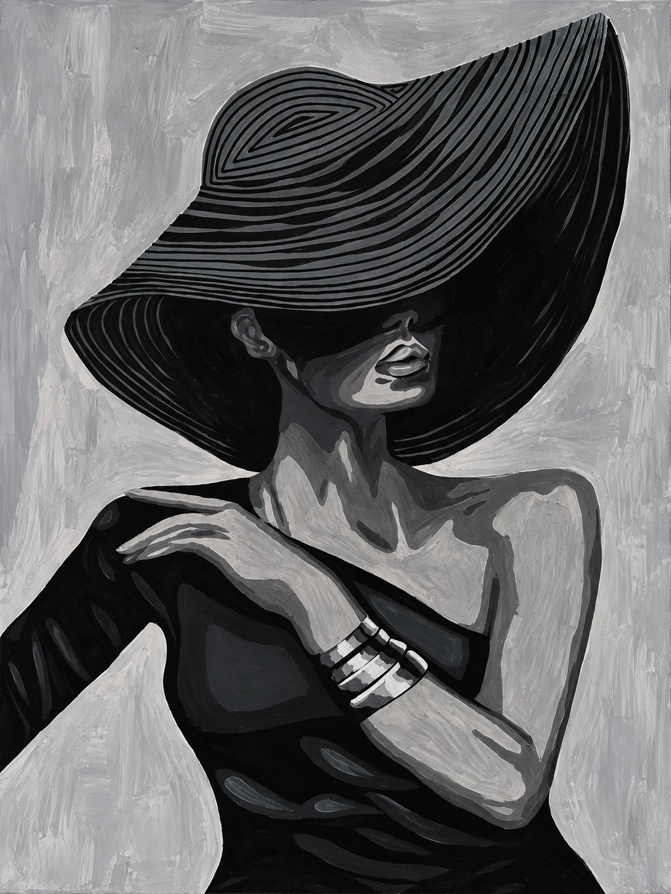
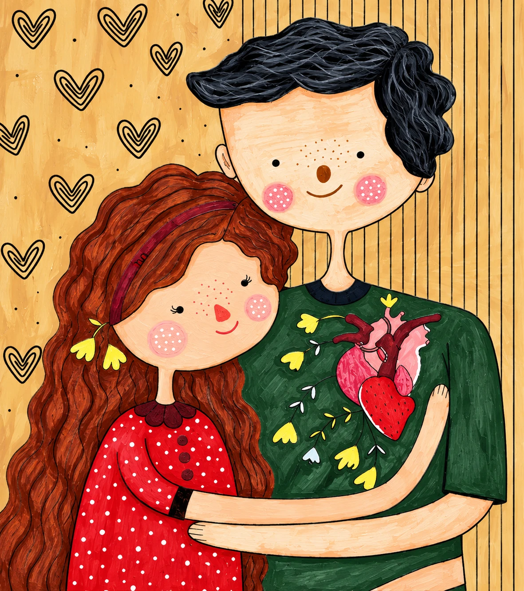

New website · Original works 2024 — 2026
Lilly's Boutique
The artist's living gallery
Desktop · 1440 × 900Real scroll, no edits
01 — Scroll-driven hero
Ten paintings fly in
as you scroll.
HeroWorksStatementFeaturedStudioShop
Own a piece
that speaks to you.
Link in bio
Original works · Worldwide shipping


